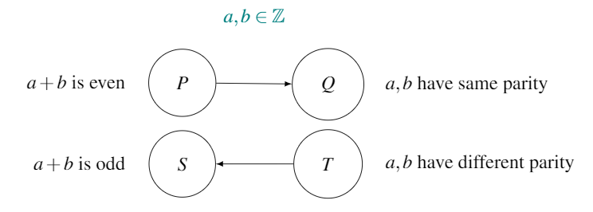

Chapter 16 Proof by contrapositive
Look back at the definition of the contrapositive from Chapter 15. Do you notice something? The contrapositive always has the same truth value as the original conjecture \(P \Rightarrow Q\). If one of them is true, the other is too. If one of them is false, the other is too.
Sometimes it can be easier to prove the contrapositive is true than to prove the original conjecture \(P \Rightarrow Q\) is true. As they have identical truth values, this gives us a useful way of proving conjectures: If \(T \Rightarrow S\) is true, then \(P \Rightarrow Q\) is true. We use this method in this chapter.
Why?
To see why a conjecture \(P \Rightarrow Q\) and its contrapositive \(T \Rightarrow S\) have identical truth values, consider this: Every element on the left hand side of a conjecture map must travel to the right hand side. Therefore every element from both \(P\) and \(S\) must find a home in either \(Q\) or \(T\).
A conjecture \(P \Rightarrow Q\) asserts that all elements in \(P\) end up in \(Q\). Therefore if there are any elements in \(T\), how did they get there? They of course came from the left hand side, but the conjecture maintains that they definitely didn’t come from \(P\), as all elements in \(P\) went to \(Q\). Therefore, if the conjecture \(P \Rightarrow Q\) is true, then any element in \(T\) must have come from \(S\).
Proof by contrapositive exploits this fact, proving the every element in \(P\) goes to \(Q\) by proving that every element in \(T\) started out in \(S\) (or simply \(T \Rightarrow S\) proves \(P \Rightarrow Q\)).
16.1 Steps
- Write the conjecture \(P \Rightarrow Q\) in the form If…then….
- Write the contrapositive \(T \Rightarrow S\) in the form If…then….
- Prove \(T \Rightarrow S\).
- This proves \(P \Rightarrow Q\).
16.2 Formal definition
To prove conjecture “If \(P\) then \(Q\)” by contrapositive, show that
\(T \Rightarrow S\)
where \(T \Rightarrow S\) is the contrapositive of the original conjecture.
16.3 Conjectures
Exercise 16.1 Use the following examples to practise proof by contrapositive. Consider why this method is easier than a direct proof for these conjectures.
Conjecture 16.1 : If \(a^2+b^2\) is odd and \(a\) and \(b\) are both integers, then \(a\) or \(b\) have different parity to one another.
Conjecture 16.2 : Every multiple of \(3\) can be written as the sum of three consecutive integers.
Conjecture 16.3 : If \(a+b\) is even, with \(a,b \in \mathbb Z\), then \(a\) and \(b\) have the same parity as one another.
Conjecture 16.4 : If \(a\) is irrational, then \(\frac{1}{a}\) is too.
Solutions:
Conjecture 16.1: To prove this using a direct proof would require us to set \(a^2 + b^2\) equal to \(2k+1, k \in \mathbb Z\) (as we’re told that it’s odd) and then doing some crazy algebra involving three variables.
A proof by contrapositive is probably going to be a lot easier here. We draw the map for the conjecture, to aid correct identification of the contrapositive.
Note that an arrow representing \(T \Rightarrow S\), the contrapositive of the original conjecture, has been added to the map.
Proof. From the map, it’s easy to see the contrapositive of the conjecture is “If \(a, b\) both odd or both even, then \(a^2+b^2\) is even.”
Case 1: \(a\), \(b\) both odd.
We have \[\begin{align} a &= 2k +1 \\ b &= 2l + 1 \end{align}\] where \(k,l \in \mathbb Z\).
Then, \[\begin{align} a^2 + b^2 &= (2k +1)^2 + (2l + 1)^2 \\ &= 4k^2 + 4k + 1 + 4l^2 + 4l + 1 \\ &= 4k^2 + 4k + 4l^2 + 4l + 2 \\ &= 2(2k^2 + 2k + 2l^2 + 2l + 1) \end{align}\] which is clearly even.
Case 2: \(a\), \(b\) both even
We have \[\begin{align} a &= 2k \\ b &= 2l \end{align}\] where \(k,l \in \mathbb Z\).
Then, \[\begin{align} a^2 + b^2 &= (2k)^2 + (2l)^2 \\ &= 4k^2 + 4l^2 \\ &= 2(2k^2 + 2l^2) \end{align}\] which is clearly even.
We have proved the contrapositive, \(T \Rightarrow S\), using two cases. We have thus proved the original conjecture \(P\Rightarrow Q\).Conjecture 16.2: First, we rewrite the conjecture,
We can easily see this conjecture holds for some small multiples of \(3\), for example
It also holds for \(0\), which is a multiple of \(3\):
And we can probably see that for any positive multiple of \(3\) for which the conjecture holds, it will hold for the negative version of that number, for example
However, to try to prove it holds for all positive multiples of \(3\) doesn’t seem an obvious task. For example, are you sure that \(561\) (which is a multiple of \(3\)) can be expressed as the sum of three consecutive integers?
A proof by contrapositive might be easier; let’s try. We draw the map for the conjecture, to aid correct identification of the contrapositive.
Again, an arrow representing \(T \Rightarrow S\), the contrapositive of the original conjecture, has been added to the map.
Proof. From the map, it’s easy to see the contrapositive of the conjecture is “If \(a\) cannot be expressed as the multiple of \(3\) consecutive numbers, then \(a\) is not a multiple of \(3\).”
If \(a\) cannot be expressed as the multiple of \(3\) consecutive numbers, then we know that there is no integer \(b\) for which \(a = b + (b+1) + (b+2)\). Therefore, \[\begin{align} a &\neq b + b+1 + b+2 \\ \end{align}\] where \(b \in \mathbb Z\).
Using simple algebra, this becomes \[\begin{align} a & \neq 3b + 3 \\ & \neq 3(b+1) \\ & \neq 3c \\ \end{align}\] where \(c=b+1\) and \(c \in \mathbb Z\).
Therefore \(a\) is not a multiple of \(3\). We have proved the contrapositive, and therefore we’ve proved the original conjecture.
Conjecture 16.3: A direct proof of this conjecture would require setting \(a+b\) equal to \(2k\), \(k \in \mathbb Z\) and then doing algebra.
Might a proof by contrapositive be easier here? We draw the map for the conjecture, to aid correct identification of the contrapositive.

Again, an arrow representing \(T \Rightarrow S\), the contrapositive of the original conjecture, has been added to the map.
Proof. From the map, it’s easy to see the contrapositive of the conjecture is “If \(a\) and \(b\), with \(a,b \in \mathbb Z\), have different parity, then \(a+b\) is odd.”
\(a\) and \(b\), with \(a,b \in \mathbb Z\), have different parity. W.l.o.g. let \(a\) be odd and thus \(b\) even Thus, \[\begin{align} a &= 2k+1 \\ b &= 2l \end{align}\] where \(k,l \in \mathbb Z\).
Then \[\begin{align} a+b &= (2k+1) + 2l \\ &= 2(k + l) + 1 \end{align}\] which is odd, as \((k+l) \in \mathbb Z\). We’ve proved the contrapositive, and thus proved the original conjecture.
Conjecture 16.4: As we don’t have an algebraic way to express the family of irrational numbers, but do have an algebraic way to express the family of rational numbers,42 a proof by contrapositive is probably going to be a lot easier than a direct proof of \(P \Rightarrow Q\).
We draw the map for the conjecture, to aid correct identification of the contrapositive.
Again, an arrow representing \(T \Rightarrow S\), the contrapositive of the original conjecture, has been added to the map.
Proof. From the map, it’s easy to see the contrapositive of the conjecture is “If \(\frac{1}{a}\) is rational, then so is \(a\).”
If \(\frac{1}{a}\) is rational, then it be expressed as \[\begin{align} \frac{1}{a} &= \frac{k}{l} \end{align}\] where \(k,l \in \mathbb Z\).
Then using simple algebra, \[\begin{align} \frac{1}{\frac{k}{l}} &= \frac{1}{\frac{1}{a}} \\ \frac{l}{k} &= a \\ \end{align}\] and so \(a\) is rational. We have proved the contrapositive, which proves the original conjecture.
Conjecture 16.5 : If \(a, b\) and \(c\) are a Pythagorean triple43, then at least one of them must be even.
Conjecture 16.6 : If the product of two integers is even then at least one of them is even.
Conjecture 16.7 : (\(a + b - c\)) can’t be even unless at least one of \(a, b\) or \(c\) is even.
Conjecture 16.8 : For an integer \(a\), if \(a^2\) is even, then \(a\) is even.
Conjecture 16.9 : For an integer \(a\), if \(a^2\) is odd, then \(a\) is odd.
Conjecture 16.10 : If \(2a\) is even, then \(a\) must be an integer.
Conjecture 16.11 : Every odd number can be written as the sum of two perfect squares.
Conjecture 16.12 : For integers \(a, b\) and \(c\), if \(a|(bc)\), then \(a |\) both \(b\) and \(c\).
Conjecture 16.13 : For integers \(a, b\) and \(c\), if \(a|(bc)\), then \(a|\) at least one of \(b\) or \(c\).
Conjecture 16.14 : For integers \(a, b\) and \(c\), if \(a \nmid (bc)\), then \(a \nmid b\).
Conjecture 16.15 : For integers \(a\) and \(b\), if \(5 \nmid (ab)\), then \(5 \nmid a\) and \(5 \nmid b\).
Conjecture 16.16 : If \(a\) is an odd number, then \(8 | (a^2 - 1)\).
Conjecture 16.17 : For a integer \(a\), if \(4|a^2\), then \(4|a\).
Conjecture 16.18 : For any non-zero numbers \(a, b\) and \(c\), if \(ab=c\) then at least one of \(a, b\) and \(c\) is positive.
Conjecture 16.19 : The sum of two consecutive numbers is odd.
Conjecture 16.20 : A triangle has at most one obtuse angle.44
Conjecture 16.21 : If \(a\) is odd, \(a^2 + 1\) is even.
Conjecture 16.22 : If \(a\) is odd, \(a^3 + 1\) is even.
Conjecture 16.23 : If \((a + b)\) is a multiple of 4, then \((a - b)\) can’t be.
Conjecture 16.24 : If \((a + b)\) is a multiple of 3, then \((a - b)\) can’t be.
Conjecture 16.25 : In the image below, the area of the circle is one half the area of the triangle.
Figure 16.1: The figure shows a circle inscribed45 in an equillateral triangle.
Conjecture 16.26 : In the image below, length \(b\) is twice length \(a\).
Figure 16.2: The figure shows a circle inscribed46 in an equillateral triangle.
See https://docs.google.com/document/d/e/2PACX-1vQZLBbHTEunXLfb_ylj08CVcDncvXdnumcJ8rDGWSa1bwGRr-UYSU2eyubpwifi548abUJyAqXSOghN/pub.↩︎
An obtuse angle is an angle between \(90^\text{o}\) and \(180^\text{o}\).↩︎